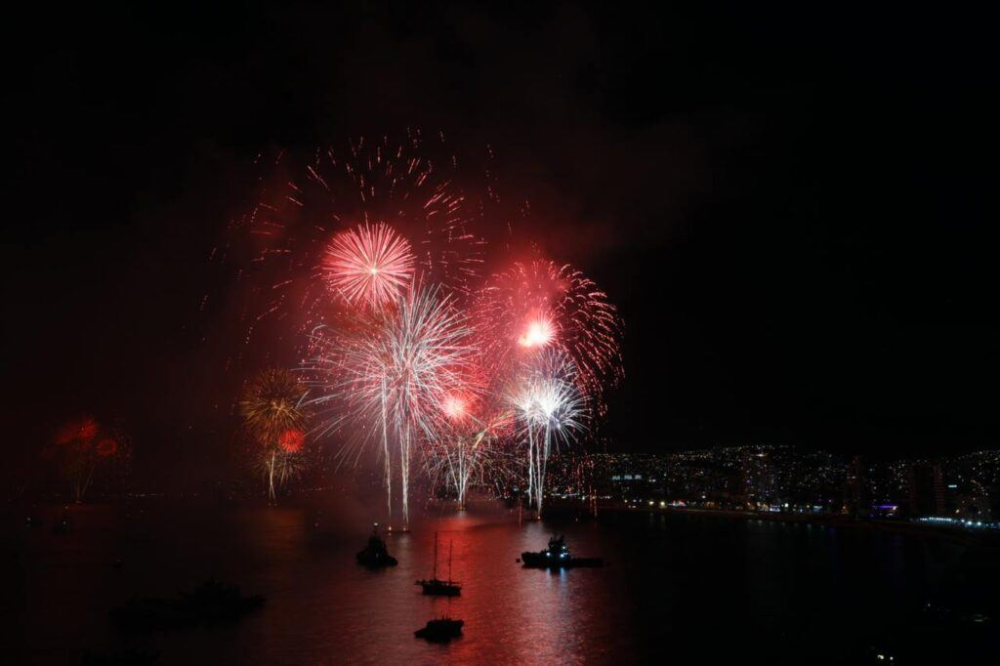

Festivals · Culture
Año Nuevo en el Mar 2027 (Valparaíso New Year fireworks)
- Dates
- –
- Location
- Valparaíso, Chile
- Format
- In-person
- Category
- Culture
- Industry
- New Year celebration / Public culture
- Organiser
- Municipalidad de Valparaíso (with Viña del Mar and coastal municipalities)
- Official website
- https://municipalidaddevalparaiso.cl/tag/ano-nuevo-en-el-mar/
About
Piromusical show from 16 launch points along the bay. Government security briefing on the municipality's site cited an expected 'sobre el millón de personas' for the previous New Year (not used as this edition's figure). Chile dates are local (mainland Chile time: UTC-3 in the southern summer, UTC-4 in winter; Easter Island is two hours behind the mainland).
Topics: fireworks, New Year, public celebration.
No organiser attendance figure found on the official pages checked (24 Nov 2026). Ranked by an estimated size tier 'mega' (about 1,000,000+ attendees; our judgement from format, venue and scale, not an official number).
Sources
- Official — https://municipalidaddevalparaiso.cl/tag/ano-nuevo-en-el-mar/